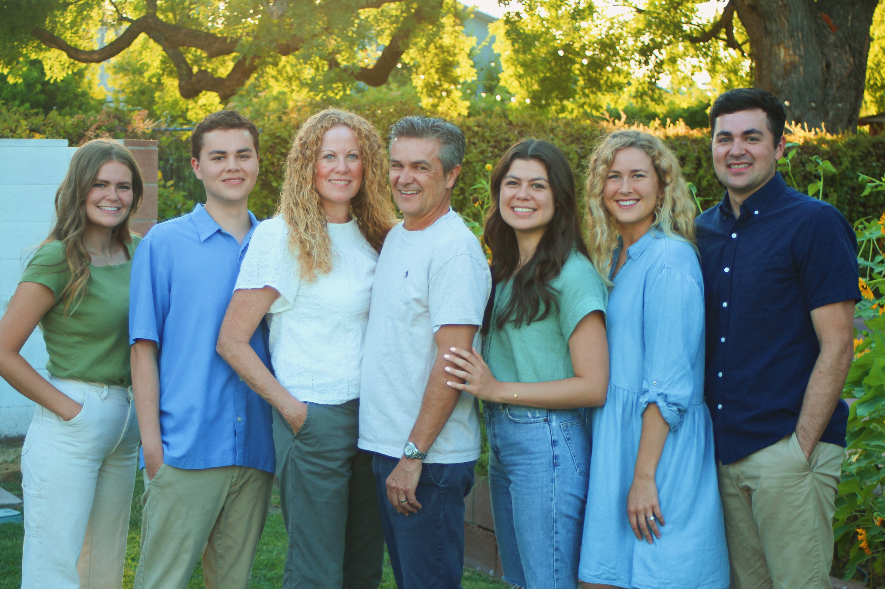
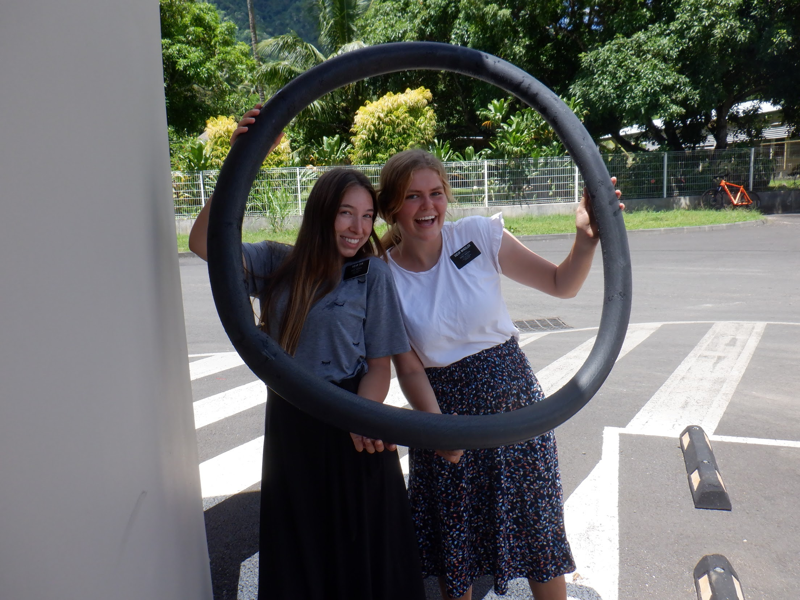

I was born in Phoenix, Arizona. I'm an undergraduate student at Brigham Young University. Below is a picture of my family. I am on the far left. My brother Gray is on my right. He is also a student at BYU. My parents, in the middle, live and work in Arizona. My sister, London, is to the right of them. She lives out in New York as a financial analyst. Last is my sister-in-law, Jordan, and my brother, Chase, who live and work out in San Fransisco.
I recently returned from a mission trip for the Church of Jesus Christ of Latter-day Saints. I had the opportunity to teach the people in Tahiti and Wisconsin about Jesus Christ.
Below is a video of my father high fiving my cousin. It is arguably cuter than the Devin Booker fist bump.